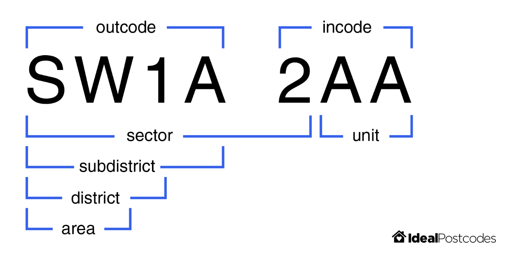

Feature Engineering for Data Linkage¶
During record linkage, the features in a given dataset are used to provide evidence as to whether two records are a match. Like any predictive model, the quality of a Splink model is dictated by the features provided.
Below are some examples of features that be created from common columns, and how to create more detailed comparisons with them in a Splink model.
Postcodes¶
In this example, we derive latitude and longitude coordinates from a postcode column to create a more nuanced comparison. By doing so, we account for similarity not just in the string of the postcode, but in the geographical location it represents. This could be useful if we believe, for instance, that people move house, but generally stay within the same geographical area.
We start with a comparison that uses the postcode's components, For example, UK postcodes can be broken down into the following substrings:
 See image source for more details.
The pre-built postcode comparison generates a comparison with levels for an exact match on full postcode, sector, district and area in turn.
Code examples to use the comparison template:
import splink.comparison_library as cl
pc_comparison = ctl.PostcodeComparison("postcode").get_comparison("duckdb")
print(pc_comparison.human_readable_description)
Output
Comparison 'PostcodeComparison' of "postcode".
Similarity is assessed using the following ComparisonLevels:
- 'postcode is NULL' with SQL rule: "postcode_l" IS NULL OR "postcode_r" IS NULL
- 'Exact match on full postcode' with SQL rule: "postcode_l" = "postcode_r"
- 'Exact match on sector' with SQL rule: NULLIF(regexp_extract("postcode_l", '^[A-Za-z]{1,2}[0-9][A-Za-z0-9]? [0-9]', 0), '') = NULLIF(regexp_extract("postcode_r", '^[A-Za-z]{1,2}[0-9][A-Za-z0-9]? [0-9]', 0), '')
- 'Exact match on district' with SQL rule: NULLIF(regexp_extract("postcode_l", '^[A-Za-z]{1,2}[0-9][A-Za-z0-9]?', 0), '') = NULLIF(regexp_extract("postcode_r", '^[A-Za-z]{1,2}[0-9][A-Za-z0-9]?', 0), '')
- 'Exact match on area' with SQL rule: NULLIF(regexp_extract("postcode_l", '^[A-Za-z]{1,2}', 0), '') = NULLIF(regexp_extract("postcode_r", '^[A-Za-z]{1,2}', 0), '')
- 'All other comparisons' with SQL rule: ELSE
Note that this is not able to compute geographical distance by default, because it cannot assume that lat-long coordinates are available.
We now proceed to derive lat and long columns so that we can take advantage of geographcial distance. We will use the ONS Postcode Directory to look up the lat-long coordinates for each postcode.
Read in a dataset with postcodes:
import duckdb
from splink import splink_datasets
df = splink_datasets.historical_50k
df_with_pc = """
WITH postcode_lookup AS (
SELECT
pcd AS postcode,
lat,
long
FROM
read_csv_auto('./path/to/ONSPD_FEB_2023_UK.csv')
)
SELECT
df.*,
postcode_lookup.lat,
postcode_lookup.long
FROM
df
LEFT JOIN
postcode_lookup
ON
upper(df.postcode_fake) = postcode_lookup.postcode
"""
df_with_postcode = duckdb.sql(df_with_pc)
Now that coordinates have been added, a more detailed postcode comparison can be produced using the postcode_comparison:
pc_comparison = cl.PostcodeComparison(
"postcode", lat_col="lat", long_col="long", km_thresholds=[1, 10]
).get_comparison("duckdb")
print(pc_comparison.human_readable_description)
Output
Comparison 'PostcodeComparison' of "postcode", "lat" and "long".
Similarity is assessed using the following ComparisonLevels:
- 'postcode is NULL' with SQL rule: "postcode_l" IS NULL OR "postcode_r" IS NULL
- 'Exact match on postcode' with SQL rule: "postcode_l" = "postcode_r"
- 'Exact match on transformed postcode' with SQL rule: NULLIF(regexp_extract("postcode_l", '^[A-Za-z]{1,2}[0-9][A-Za-z0-9]? [0-9]', 0), '') = NULLIF(regexp_extract("postcode_r", '^[A-Za-z]{1,2}[0-9][A-Za-z0-9]? [0-9]', 0), '')
- 'Distance less than 1km' with SQL rule:
cast(
acos(
case
when (
sin( radians("lat_l") ) * sin( radians("lat_r") ) +
cos( radians("lat_l") ) * cos( radians("lat_r") )
* cos( radians("long_r" - "long_l") )
) > 1 then 1
when (
sin( radians("lat_l") ) * sin( radians("lat_r") ) +
cos( radians("lat_l") ) * cos( radians("lat_r") )
* cos( radians("long_r" - "long_l") )
) < -1 then -1
else (
sin( radians("lat_l") ) * sin( radians("lat_r") ) +
cos( radians("lat_l") ) * cos( radians("lat_r") )
* cos( radians("long_r" - "long_l") )
)
end
) * 6371
as float
)
<= 1
- 'Distance less than 10km' with SQL rule:
cast(
acos(
case
when (
sin( radians("lat_l") ) * sin( radians("lat_r") ) +
cos( radians("lat_l") ) * cos( radians("lat_r") )
* cos( radians("long_r" - "long_l") )
) > 1 then 1
when (
sin( radians("lat_l") ) * sin( radians("lat_r") ) +
cos( radians("lat_l") ) * cos( radians("lat_r") )
* cos( radians("long_r" - "long_l") )
) < -1 then -1
else (
sin( radians("lat_l") ) * sin( radians("lat_r") ) +
cos( radians("lat_l") ) * cos( radians("lat_r") )
* cos( radians("long_r" - "long_l") )
)
end
) * 6371
as float
)
<= 10
- 'All other comparisons' with SQL rule: ELSE
or by using cll.distance_in_km_level() in conjunction with other comparison levels:
import splink.comparison_level_library as cll
import splink.comparison_library as cl
custom_postcode_comparison = cl.CustomComparison(
output_column_name="postcode",
comparison_description="Postcode",
comparison_levels=[
cll.NullLevel("postcode"),
cll.ExactMatchLevel("postcode"),
cll.DistanceInKMLevel("lat", "long", 1),
cll.DistanceInKMLevel("lat", "long", 10),
cll.DistanceInKMLevel("lat", "long", 50),
cll.ElseLevel(),
],
)
Phonetic transformations¶
Phonetic transformation algorithms can be used to identify words that sound similar, even if they are spelled differently. These are particularly useful for names and can be used as an additional comparison level within name comparisons.
For a more detailed explanation on phonetic transformation algorithms, see the topic guide.
Example¶
There are a number of python packages which support phonetic transformations that can be applied to a pandas dataframe, which can then be loaded into the Linker. For example, creating a Double Metaphone column with the phonetics python library:
import pandas as pd
import phonetics
from splink import splink_datasets
df = splink_datasets.fake_1000
# Define a function to apply the dmetaphone phonetic algorithm to each name in the column
def dmetaphone_name(name):
if name is None:
pass
else:
return phonetics.dmetaphone(name)
# Apply the function to the "first_name" and surname columns using the apply method
df['first_name_dm'] = df['first_name'].apply(dmetaphone_name)
df['surname_dm'] = df['surname'].apply(dmetaphone_name)
df.head()
Output
| unique_id | first_name | surname | dob | city | group | first_name_dm | surname_dm | ||
|---|---|---|---|---|---|---|---|---|---|
| 0 | 0 | Julia | 2015-10-29 | London | hannah88@powers.com | 0 | ('JL', 'AL') | ||
| 1 | 1 | Julia | Taylor | 2015-07-31 | London | hannah88@powers.com | 0 | ('JL', 'AL') | ('TLR', '') |
| 2 | 2 | Julia | Taylor | 2016-01-27 | London | hannah88@powers.com | 0 | ('JL', 'AL') | ('TLR', '') |
| 3 | 3 | Julia | Taylor | 2015-10-29 | hannah88opowersc@m | 0 | ('JL', 'AL') | ('TLR', '') | |
| 4 | 4 | oNah | Watson | 2008-03-23 | Bolton | matthew78@ballard-mcdonald.net | 1 | ('AN', '') | ('ATSN', 'FTSN') |
Note: Soundex and Metaphone are also supported in phonetics
Now that the dmetaphone columns have been added, they can be used within comparisons. For example, using the NameComparison function from the comparison library.
import splink.comparison_library as cl
comparison = cl.NameComparison("first_name", dmeta_col_name="first_name_dm").get_comparison("duckdb")
comparison.human_readable_description
Output
Comparison 'NameComparison' of "first_name" and "first_name_dm".
Similarity is assessed using the following ComparisonLevels:
- 'first_name is NULL' with SQL rule: "first_name_l" IS NULL OR "first_name_r" IS NULL
- 'Exact match on first_name' with SQL rule: "first_name_l" = "first_name_r"
- 'Jaro-Winkler distance of first_name >= 0.92' with SQL rule: jaro_winkler_similarity("first_name_l", "first_name_r") >= 0.92
- 'Jaro-Winkler distance of first_name >= 0.88' with SQL rule: jaro_winkler_similarity("first_name_l", "first_name_r") >= 0.88
- 'Array intersection size >= 1' with SQL rule: array_length(list_intersect("first_name_dm_l", "first_name_dm_r")) >= 1
- 'Jaro-Winkler distance of first_name >= 0.7' with SQL rule: jaro_winkler_similarity("first_name_l", "first_name_r") >= 0.7
- 'All other comparisons' with SQL rule: ELSE
Full name¶
If Splink has access to a combined full name column, it can use the term frequency of the full name, as opposed to treating forename and surname as independent.
This can be important because correlations in names are common. For example, in the UK, “Mohammed Khan” is a more common full name than the individual frequencies of "Mohammed" or "Khan" would suggest.
The following example shows how to do this.
For more on term frequency, see the dedicated topic guide.
Example¶
Derive a full name column:
import pandas as pd
from splink import splink_datasets
df = splink_datasets.fake_1000
df['full_name'] = df['first_name'] + ' ' + df['surname']
df.head()
Now that the full_name column has been added, it can be used within comparisons. For example, using the ForenameSurnameComparison function from the comparison library.
comparison = cl.ForenameSurnameComparison(
"first_name", "surname", forename_surname_concat_col_name="full_name"
)
comparison.get_comparison("duckdb").as_dict()
Output
{'output_column_name': 'first_name_surname',
'comparison_levels': [{'sql_condition': '("first_name_l" IS NULL OR "first_name_r" IS NULL) AND ("surname_l" IS NULL OR "surname_r" IS NULL)',
'label_for_charts': '(first_name is NULL) AND (surname is NULL)',
'is_null_level': True},
{'sql_condition': '"full_name_l" = "full_name_r"',
'label_for_charts': 'Exact match on full_name',
'tf_adjustment_column': 'full_name',
'tf_adjustment_weight': 1.0},
{'sql_condition': '"first_name_l" = "surname_r" AND "first_name_r" = "surname_l"',
'label_for_charts': 'Match on reversed cols: first_name and surname'},
{'sql_condition': '(jaro_winkler_similarity("first_name_l", "first_name_r") >= 0.92) AND (jaro_winkler_similarity("surname_l", "surname_r") >= 0.92)',
'label_for_charts': '(Jaro-Winkler distance of first_name >= 0.92) AND (Jaro-Winkler distance of surname >= 0.92)'},
{'sql_condition': '(jaro_winkler_similarity("first_name_l", "first_name_r") >= 0.88) AND (jaro_winkler_similarity("surname_l", "surname_r") >= 0.88)',
'label_for_charts': '(Jaro-Winkler distance of first_name >= 0.88) AND (Jaro-Winkler distance of surname >= 0.88)'},
{'sql_condition': '"surname_l" = "surname_r"',
'label_for_charts': 'Exact match on surname',
'tf_adjustment_column': 'surname',
'tf_adjustment_weight': 1.0},
{'sql_condition': '"first_name_l" = "first_name_r"',
'label_for_charts': 'Exact match on first_name',
'tf_adjustment_column': 'first_name',
'tf_adjustment_weight': 1.0},
{'sql_condition': 'ELSE', 'label_for_charts': 'All other comparisons'}],
'comparison_description': 'ForenameSurnameComparison'}
Note that the first level is now :
{'sql_condition': '"full_name_l" = "full_name_r"',
'label_for_charts': 'Exact match on full_name',
'tf_adjustment_column': 'full_name',
'tf_adjustment_weight': 1.0},
whereas without specifying forename_surname_concat_col_name we would have had:
{'sql_condition': '("first_name_l" = "first_name_r") AND ("surname_l" = "surname_r")',
'label_for_charts': '(Exact match on first_name) AND (Exact match on surname)'},